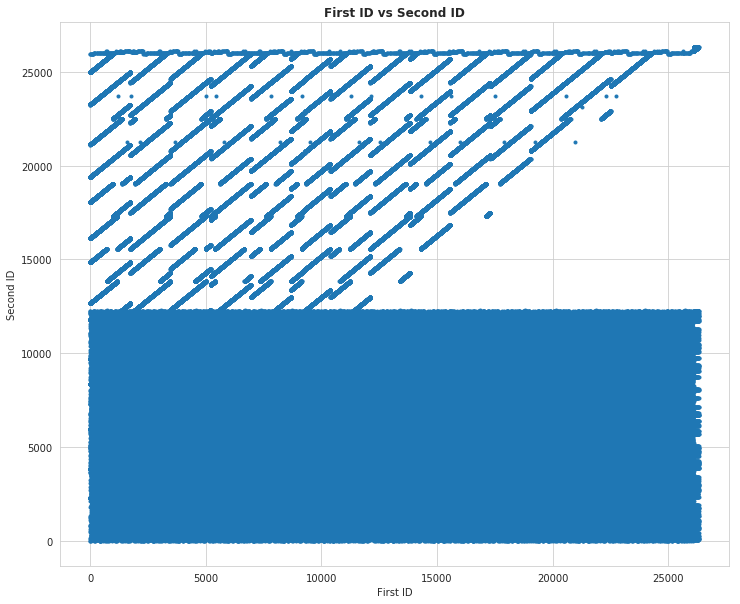

Data Leakages
Table of Contents
Introduction
In this programming assignment we will illustrate a very severe data leakage, of the sort that can often be found in competitions. The task is to score the pairs of objects, i.e. predict 1 if two objects belong to the same class and 0 otherwise.
The data in this assignment is taken from a real competition, and we will not use the training set at all and still achieve an accuracy score of almost 100% - just by exploiting the leakage.
Imports
During the importing of pandas (or scipy) you get a warning about a potential binary incompatibility. According to Stack Overflow you can safely ignore this, so we'll use warnings to suppress the messages, just so it doesn't keep bringing them up everytime I run this notebook.
import warnings
warnings.filterwarnings("ignore", message="numpy.dtype size changed")
warnings.filterwarnings("ignore", message="numpy.ufunc size changed")
# python standard library
import os
# from pypi
from tabulate import tabulate
import matplotlib.pyplot as pyplot
import numpy
import pandas
import scipy.sparse
import seaborn
% matplotlib inline
seaborn.set_style("whitegrid")
FIGURE_SIZE = (12, 10)
Helpers
Paths
Since I'm doing this as posts in nikola, but I'm trying to keep all non-post files outside of the posts folder, I'm going to use a class to keep the paths to the output (submission) files straight.
class Paths:
"""Helper to put submission files in the right folder"""
def __init__(self):
self._data = None
self._submissions = None
self._test_set = None
return
@property
def data(self):
"""The path to the data set"""
if self._data is None:
self._data = "../data/"
if not os.path.isdir(self._data):
os.mkdir(self._data)
return self._data
@property
def submissions(self):
"""Path to the submissions"""
if self._submissions is None:
self._submissions = os.path.join(self.data, "submissions/")
if not os.path.isdir(self._submissions):
os.mkdir(self._submissions)
return self._submissions
@property
def test_set(self):
"""path to the test-set data"""
if self._test_set is None:
self._test_set = os.path.join(self.data, "test_pairs.csv")
return self._test_set
def submit(self, filename):
"""Add the filename to the path
Args:
filename (str): name to add to the submissions folder
Returns:
str: path to the file in the submissions folder
"""
return os.path.join(self.submissions, filename)
Data
class TestSet:
"""Loads the test-set data
Args:
paths: object with the path to the test-set
"""
def __init__(self, paths=Paths):
self.paths = paths()
self._data = None
return
@property
def data(self):
"""the test-set data
Returns:
`pandas.DataFrame`: the test-set data
"""
if self._data is None:
self._data = pandas.read_csv(self.paths.test_set)
return self._data
Load the data
Let's load the test data. Note that we don't have any training data here, just test data. Moreover, we will not use any features of the test set. All we need to solve this task is the file with the indices for the pairs that we need to compare.
Let's load the data with the test indices.
test = TestSet().data
print(test.head(10))
pairId FirstId SecondId 0 0 1427 8053 1 1 17044 7681 2 2 19237 20966 3 3 8005 20765 4 4 16837 599 5 5 3657 12504 6 6 2836 7582 7 7 6136 6111 8 8 23295 9817 9 9 6621 7672
We don't know what the data represents in this case, but you can give them an arbitrary meaning. You could, for example, think that there is a test dataset of images, and each image is assigned a unique `ID` from \(0\) to \(N-1\) (N – is the number of images). In the dataframe above FirstId and SecondId point to these IDs and define pairs that we should compare: e.g. Do both images in the pair belong to the same class or not? So, for example for the first row: if images with `ID=1427` and `ID=8053` belong to the same class, we should predict \(1\) and \(0\) if they don't.
But in our case we don't really care about the images, and how exactly we compare the images (as long as the output is binary).
We suggest you to try to solve the puzzle yourself first. You need to submit a `.csv` file with columns `pairId` and `Prediction` to the grader. The number of submissions allowed is made pretty huge to let you explore the data without worries. The returned score should be very close to \(1\).
figure, axe = pyplot.subplots(figsize=FIGURE_SIZE)
axe.set_title("First ID vs Second ID", weight="bold")
axe.set_xlabel("First ID")
axe.set_ylabel("Second ID")
plot = pyplot.scatter(test.FirstId, test.SecondId, marker='.')

So this doesn't appear to be a randomized data set. The first half of the Second IDs seem to be completely paired with the entire set of first IDs, while the second half of the second IDs creates some kind of strange diagonal pattern, except for the highest Second IDs which are once again completely matched with the First IDs.
EDA and Leakage Intuition
As we already know, the key to discovering data leakages is careful Exploratory Data Analysis (EDA). So let's start our work with some basic data exploration and build an intuition about the leakage.
First, check, how many different id's are there: concatenate FirstId and SecondId and print the number of unique elements. Also print the minimum and maximum value for that vector.
smashed = test.FirstId.apply(lambda row: str(row)) + ',' + test.SecondId.apply(lambda row: str(row))
print(smashed.head())
0 1427,8053 1 17044,7681 2 19237,20966 3 8005,20765 4 16837,599 dtype: object
print("|Unique Pairs| {}|".format(len(smashed.unique())))
print("|Total Pairs| {}|".format(len(test)))
print("|Lowest Valued Pair (ASCII)| ({})|".format(smashed.min()))
print("|Highest Valued Pair| ({})|".format(smashed.max()))
| Unique Pairs | 368538 |
| Total Pairs | 368550 |
| Lowest Valued Pair (ASCII) | (0,10552) |
| Highest Valued Pair | (9999,8996) |
and then print how many pairs we need to classify (it is basically the number of rows in the test set)
print(len(test))
print(len(test) - len(smashed.unique()))
368550 12
Now print, how many distinct pairs it would be possible to create out of all "images" in the dataset?
catted = pandas.concat([test.FirstId, test.SecondId])
image_count = len(catted.unique())
print("Unique image IDs: {:,}".format(image_count))
print("Handshakes: {:,}".format(int((image_count * (image_count - 1))/2)))
Unique image IDs: 26,325 Handshakes: 346,489,650
So the number of pairs we are given to classify is very, very small compared to the total number of possible pairs.
To exploit the leak we need to assume (or prove), that the total number of ID-pairs classified as 1 is small compared to the total number of pairs possible. For example, think about an image dataset with \(1000\) classes, \(N\) images per class. Then if the task was to tell whether a pair of images belongs to the same class or not, we would have \(1000\frac{N(N-1)}{2}\) positive pairs, while the total number of pairs was \(\frac{1000N(1000N - 1)}{2}\).
Another example - in a Quora competitition the task was to classify whether a pair of questions are duplicates of each other or not. Of course, the total number of question-pairs is huge, while the number of duplicates (positive pairs) is much, much smaller.
Probing the Leaderboard
Finally, let's see what fraction of the ID-pairs have a class of `1`. To do this we just need to submit a constant prediction (all ones) and check the accuracy the grader reports. Create a dataframe with columns `pairId` and `Prediction`, fill it and export it to a `.csv` file. Then submit to the Coursera grader and examine the grader's output to get the fraction of 1s in the test-set.
All Ones
paths = Paths()
all_ones = test[["pairId"]].copy()
all_ones["Prediction"] = [1] * len(all_ones)
print(all_ones.head())
all_ones.to_csv(paths.submit("submission_ones.csv"), index=False)
pairId Prediction 0 0 1 1 1 1 2 2 1 3 3 1 4 4 1
The submission output was:
Your accuracy score is 0.500000. It seems too low, try one more time.
So, we assumed the that there were many more pairs overall than there were pairs of class 1, but it is not the case for the test set. This means that the test set is constructed not by sampling random pairs, but with a specific sampling algorithm which caused the pairs of class `1` to be oversampled.
Now think - how we can exploit this fact? What is the leak here? If you get it now, you may try to get to the final answer yourself, othewise you can follow the instructions below.
All Zeros
Although we're told that this was a binary data set (and you could check it just by printing out the unique values), I sort of flaked and submitted a set where all the pairs were classified as zeros anyway. Here's what happened.
all_zeros = test[["pairId"]].copy()
all_zeros["Prediction"] = numpy.zeros(len(all_zeros))
assert all_zeros.Prediction.shape == all_zeros.pairId.shape
print(all_zeros.head())
all_zeros.to_csv(paths.submit("submission_zeros.csv"), index=False)
pairId Prediction 0 0 0.0 1 1 0.0 2 2 0.0 3 3 0.0 4 4 0.0
This is the grader's output.
Your accuracy score is 0.500000. It seems too low, try one more time.
So it appears we've confirmed that the dataset is binary, with half the outputs being ones, the other half being zeros.
Building a magic feature
In this section we will build a magic feature that will solve the problem almost perfectly. The instructions will lead you to the correct solution, but please, try to explain the purpose of the steps we do to yourself – it is very important.
Incidence matrix
First, we need to build an incidence matrix. You can think of pairs `(FirstId, SecondId)` as edges in an undirected graph.
The incidence matrix is a matrix of size `(maxId + 1, maxId + 1)`, where each row (column) `i` corresponds `i-th` `Id`. In this matrix we put the value `1` to the position `[i, j]`, if and only if a pair `(i, j)` or `(j, i)` is present in a given set of pairs `(FirstId, SecondId)`. All the other elements in the incidence matrix are zeros.
Important! The incidence matrices are typically very, very sparse (there are a small number of non-zero values). At the same time the incidence matrices are usually huge in terms of the total number of elements and it is impossible to store them in memory in the dense format. But due to their sparsity, incidence matrices can be easily represented as sparse matrices. If you are not familiar with sparse matrices, please see wikipedia and scipy.sparse reference. Use any of the `scipy.sparse` constructors to build incidence matrix.
For example, you can use this constructor: `scipy.sparse.coo_matrix((data, (i, j)))`. We highly recommend you learn to use different `scipy.sparse` constuctors, and matrices types, but if you feel you don't want to use them, you can always build this matrix with a simple `for` loop. You will need to first create a matrix using `scipy.sparse.coo_matrix((M, N), [dtype])` with an appropriate shape `(M, N)` and then iterate through `(FirstId, SecondId)` pairs and fill the corresponding elements in the matrix with ones.
Note, that the matrix should be symmetric and consist only of zeros and ones. This is something you can use to check your matrix.
De-duplicating the Data
The test data turns out to have duplicate ID pairs, which will cause our incidence matrix to produce numbers greater than 1 if we leave them in, so we need to remove them (using the duplicated method).
pairs_1 = pandas.Series(list(zip(test.FirstId, test.SecondId)), index=test.index)
pairs_2 = pandas.Series(list(zip(test.SecondId, test.FirstId)), index=test.index)
pairs = pandas.concat([pairs_1, pairs_2])
pairs = pairs[~pairs.duplicated()]
assert not any(pairs.duplicated())
pair_count = len(pairs)
assert pair_count == 736872
print(pair_count)
736872
Which is the value provided to test the length of the matrix. Now we need to get the indices.
i_indices = pairs.apply(lambda row: row[0])
j_indices = pairs.apply(lambda row: row[1])
assert i_indices.shape == (pair_count,)
assert j_indices.shape == (pair_count,)
Now we create a sparse matrix where the row indices are our FirstIds and the column indices are our Second Ids and each of their pairs (i, j) is set to 1.
data = numpy.ones(pair_count)
inc_mat = scipy.sparse.coo_matrix((data, (i_indices, j_indices)))
# Sanity checks
assert inc_mat.max() == 1
assert inc_mat.sum() == 736872
It is more convenient to have the incidence matrix in Compressed Sparse Row (CSR) format, so convert it here.
inc_mat = inc_mat.tocsr()
Now To Build the Magic Feature
Why did we build the incidence matrix? We can think of the rows in this matrix as a representation for the objects. The `i-th` row is a representation for an object with `Id = i`. Then, to measure the similarity between two objects we can measure similarity between their representations. And we will see that these representations are very good.
Now select the rows from the incidence matrix, that correspond to `test.FirstId`'s, and `test.SecondId`'s.
Note, scipy goes crazy if a matrix is indexed with pandas' series. So do not forget to convert `pd.series` to `np.array`. These lines should normally run very quickly.
rows_FirstId = inc_mat[test.FirstId.values]
rows_SecondId = inc_mat[test.SecondId.values]
Our magic feature will be the dot product between representations of a pair of objects. Dot product can be regarded as similarity measure – for our non-negative representations the dot product is close to 0 when the representations are different, and is huge, when representations are similar.
Now compute the dot product between corresponding rows in the rows_FirstId and rows_SecondId matrices.
Note, that in order to do pointwise multiplication in scipy.sparse you need to use the multiply function (along with a sum), the regular `*` operator corresponds to matrix-matrix multiplication. Also, the expected shape provided is only an array, not a matrix, so we can use numpy.squeeze to get change it (from having a single column to not having a column).
f = numpy.squeeze(numpy.asarray(rows_FirstId.multiply(rows_SecondId).sum(axis=1)))
# Sanity check
assert f.shape == (368550, )
That is it! We've built our magic feature.
figure, axe = pyplot.subplots(figsize=FIGURE_SIZE)
axe.set_title("Distribution of Similarity Matrix (f)")
plot = seaborn.distplot(f)
From magic feature to binary predictions
But how do we convert this feature into binary predictions? We do not have a train set to learn a model, but we have a piece of information about test set: the baseline accuracy score that you got, when submitting constant. And we also have a very strong considerations about the data generative process, so probably we will be fine even without a training set.
We may try to choose a thresold, and set the predictions to 1, if the feature value `f` is higher than the threshold, and 0 otherwise. What threshold would you choose?
How do we find a right threshold? Let's first examine this feature: print frequencies (or counts) of each value in the feature `f`.
f_frame = pandas.DataFrame(dict(f=f))
counts = f_frame.f.value_counts().reset_index()
counts.columns = ["Value" , "Count"]
print(tabulate(counts, headers="keys", tablefmt="orgtbl",
showindex=False))
| Value | Count |
|---|---|
| 20 | 183799 |
| 14 | 183279 |
| 15 | 852 |
| 19 | 546 |
| 28 | 54 |
| 35 | 14 |
| 21 | 6 |
fractions = counts/len(test)
fractions["Value"] = counts.Value
print(tabulate(fractions, headers="keys", tablefmt="orgtbl", showindex=False,
floatfmt=".3f"))
| Value | Count |
|---|---|
| 20.000 | 0.499 |
| 14.000 | 0.497 |
| 15.000 | 0.002 |
| 19.000 | 0.001 |
| 28.000 | 0.000 |
| 35.000 | 0.000 |
| 21.000 | 0.000 |
So it looks like half the values are below 20 and half are above. We'll make our predictions by first getting a boolean array testing this case and then casting it to integers (0 is False, 1 is True).
predict_twenty = f >= 20
submission = test.loc[:,['pairId']]
submission['Prediction'] = predict_twenty.astype(int)
submission.to_csv(paths.submit('predict_twenty.csv'), index=False)
But if you look at the table, it looks like 20 alone accounts for exactly half the values.
predict_only_twenty = f == 20
submission = test.loc[:,['pairId']]
submission['Prediction'] = predict_only_twenty.astype(int)
submission.to_csv(paths.submit('predict_only_twenty.csv'), index=False)
This is the grader output.
Well done! Your accuracy score is 0.998128
predict_fourteen = f > 14
submission = test.loc[:,['pairId']]
submission['Prediction'] = predict_fourteen.astype(int)
submission.to_csv(paths.submit('predict_fourteen.csv'), index=False)
This was the grader output.
Well done! Your accuracy score is 0.997298
Finally: try to explain to yourself, why the whole thing worked out. In fact, there is no magic in this feature, and the idea to use rows in the incidence matrix can be intuitively justified.
Bonus
Interestingly, it is not the only leak in this dataset. There is another totally different way to get almost 100% accuracy. Try to find it!
What does it all mean then?
From our initial check uploading all the submissions as one (so all the ID-pairs were classified as having IDs from the same class) we saw that half the entries were 1's and half were 0's. Our incidence matrix showed that half the vectors had a similarity of 20 or more, so by predicting that all the pairs whose incidence matrix dot-products were 20 or greater were of the same class, we could predict with greater than 99% accuracy which IDs were from the same class.